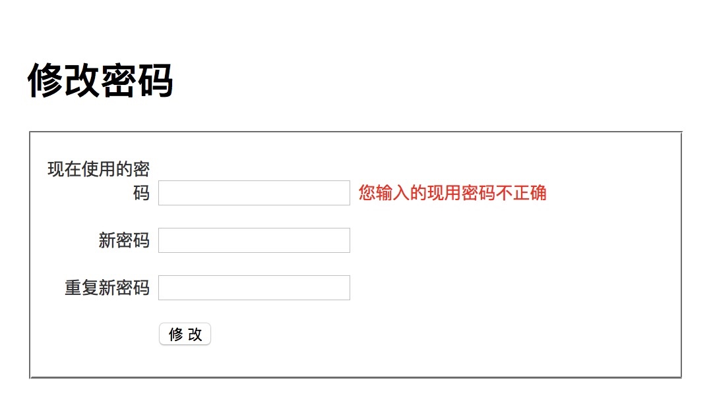
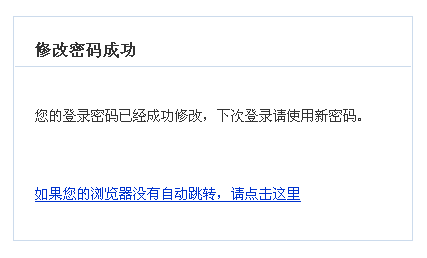

修改密码
通常，用户登录后修改自己的密码时都要求输入正在使用的密码。
添加控制器动作
修改 users 控制器，加入下列代码：
1 2 3 4 5 6 7 8 9 10 11 12 13 14 15 16 17 18 19 20 21 22 23 24 25 26 27 28 29 30 31
| function actionChangePasswd() { $form = new Form_ChangePasswd(); if ($this->_context->isPOST() && $form->validate($_POST)) { try { $current_user = $this->_app->currentUser(); User::meta()->changePassword( $current_user['username'], $form['new_password']->value, $form['old_password']->value ); return $this->_redirectMessage( '修改密码成功', '您的登录密码已经成功修改，下次登录请使用新密码。', url('default/index')); } catch (AclUser_WrongPasswordException $ex) { $form['old_password']->invalidate('您输入的现用密码不正确'); } } $this->_view['form'] = $form; }
|
实现修改密码表单
在 Web 应用中，表单需要完成下面的主要任务：
- 容纳从客户端提交的数据
- 对客户端提交的数据进行过滤
- 对客户端提交的数据进行验证
- 导出过滤和验证后的数据
- 构造出在浏览器中需要的 HTML 代码
为了提供更好的灵活性，并且简化表单的使用，QeePHP 将上述几项任务分为多个不同的部分：
- QForm 负责构造表单元素容器
- 表单元素负责容纳数据，并数据进行过滤和验证
- 通过 QeePHP 的用户界面控件构造表单 HTML 代码
在 QeePHP 应用中使用表单，典型的过程如下：
- 创建表单，定义表单需要容纳的数据，以及过滤和验证规则
- 在控制器动作中构造表单对象，并导入数据进行过滤和验证
- 在视图中构造表单的 HTML 代码，或者通过视图片段构造表单 HTML 代码
搞清楚了基本概念，我们就来一步步实现用户注册表单。
创建表单对象
新建文件 app/form/changepasswd.php，内容如下：
1 2 3 4 5 6 7 8 9 10 11 12 13 14 15 16 17 18 19 20 21 22 23 24 25 26 27 28 29 30 31 32 33 34 35
| class Form_ChangePasswd extends QForm { function __construct() { parent::__construct('form_changepasswd'); $fields = array('old_password'=> array(),'new_password' => array(), 'new_password2' => array()); $this->loadFromConfig($fields); $this['old_password']->addValidations(User::meta(), 'password'); $this['new_password']->addValidations(User::meta(), 'password'); $this['new_password2']->addValidations(User::meta(), 'password') ->addValidations(array($this, 'checkNewPassword'), '两次输入的密码必须一致'); } * 检查两次输入的新密码是否一致 */ function checkNewPassword($new_password) { return ($this['new_password2']->value == $this['new_password']->value); } }
|
三个密码输入字段使用了User 模型的password属性的验证规则， addValidations(User::meta(), 'password')方法的 User::meta()返回的是User模型的一些源信息，其中就包括User模型的字段和字段的验证规则，第二个参数指定按 User模型的passowrd 属性验证规则来验证，还特别增加一个额外的验证规则。checkNewPassword() 这个方法被用于对 new_password2 字段的验证。这样可以检查两次输入的新密码是否一致。
对于复杂表单的自定义验证规则，都可以采用上述方式实现。
船舰修改密码表单的配置文件 app/form/changepasswd_form.yaml：
添加控制器动作
修改 users 控制器，加入下列代码：
1 2 3 4 5 6 7 8 9 10 11 12 13 14 15 16 17 18 19 20 21 22 23 24 25 26 27 28 29 30 31
| function actionChangePasswd() { $form = new Form_ChangePasswd(); if ($this->_context->isPOST() && $form->validate($_POST)) { try { $current_user = $this->_app->currentUser(); User::meta()->changePassword( $current_user['username'], $form['new_password']->value, $form['old_password']->value ); return $this->_redirectMessage( '修改密码成功', '您的登录密码已经成功修改，下次登录请使用新密码。', url('default/index')); } catch (AclUser_WrongPasswordException $ex) { $form['old_password']->invalidate('您输入的现用密码不正确'); } } $this->_view['form'] = $form; }
|
actionChangePasswd() 中，我们使用 acluser 的 changePassword() 方法来修改密码。如果现有密码出错，将抛出异常。只要捕获异常就可以在界面提示用户输入出错了。
建立视图
创建文件 app/view/users/changepasswd.php，内容为：
1 2 3 4 5 6 7 8 9 10 11 12 13 14 15 16 17 18 19 20 21 22 23 24 25 26 27 28 29 30 31 32 33 34 35 36 37
| <?php $this->_extends('_layouts/default_layout'); ?> <?php $this->_block('contents'); ?> <form name="form_user" id="form_user" action="<?php echo url('users/changepasswd'); ?>" method="post"> <h1>修改密码</h1> <fieldset> <p> <label for="username">现在使用的密码</label> <input type="password" name="old_password" id="old_password" /> <span class="error"><?php echo $form['old_password']->isValid() ? "" : $form['old_password']->errorMsg()[0];?></span> </p> <p> <label for="password">新密码</label> <input type="password" name="new_password" id="new_password" /> <span class="error"><?php echo $form['new_password']->isValid() ? "" : $form['new_password']->errorMsg()[0];?></span> </p> <p> <label for="password">重复新密码</label> <input type="password" name="new_password2" id="new_password2" /> <span class="error"><?php echo $form['new_password2']->isValid() ? "" : $form['new_password2']->errorMsg()[0];?></span> </p> <p> <label> </label> <input type="submit" name="Submit" value="修 改" /> </p> </fieldset> </form> <?php $this->_endblock(); ?>
|
$form 是个继承了ArrayAccess接口的表单对象实例，所以可以通过数组下标形式访问其内部的表单元素对象实例，例如$form['old_password']访问到的是old_password表单对象，然后调用他的实例方法isValid()判断该字段验证是否通过，不通过调用errorMsg()方法返回验证失败的所有错误信息（它是个数组）。
输入错误的现在使用密码将会提示错误如图：

注意这次在重定向浏览器时调用的是 _redirectMessage()方法。这个方法会通过 redirect_message 视图来显示提示信息，能够让用户注意到操作的结果。如果有必要，可以将注册、登录等方法的重定向操作也改为使用带提示信息的重定向。集体源码可以参考app/controller/abstract.php文件。

现在用户方面的功能就基本上实现完了。下一节开始，我们将实现任务的管理功能。